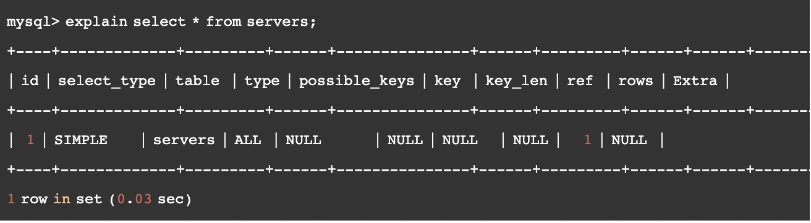

Mysql-004Mysql优化
MySQL优化
配置优化
配置优化指的MySQL 的 server端的配置，一般对于业务方而言，可以不用关注，毕竟会有专门的DBA来处理，但是对于原理的了解，我想，我们开发，是需要了解的。
MySQL优化，也可以参考：超级全面的MySQL优化面试解析
基本配置
1. innodb_buffer_pool_size
这是安装完InnoDB后第一个应该设置的选项。缓冲池是数据和索引缓存的地方：这个值越大越好，
这能保证你在大多数的读取操作时使用的是内存而不是硬盘。典型的值是5-6GB(8GB内存)，
20-25GB(32GB内存)，100-120GB(128GB内存)。
2. innodb_log_file_size
这是redo日志的大小。redo日志被用于确保写操作快速而可靠并且在崩溃时恢复。
一直到MySQL 5.1，它都难于调整，因为一方面你想让它更大来提高性能，
另一方面你想让它更小来使得崩溃后更快恢复。
幸运的是从MySQL 5.5之后，崩溃恢复的性能的到了很大提升，
这样你就可以同时拥有较高的写入性能和崩溃恢复性能了。
一直到MySQL 5.5，redo日志的总尺寸被限定在4GB(默认可以有2个log文件)。
这在MySQL 5.6里被提高了。
如果你知道你的应用程序需要频繁的写入数据并且你使用的时MySQL 5.6，
你可以一开始就把它这是成4G。
3. max_connections
如果你经常看到‘Too many connections'错误，是因为max_connections的值太低了。
这非常常见因为应用程序没有正确的关闭数据库连接，你需要比默认的151连接数更大的值。
max_connection值被设高了(例如1000或更高)之后一个主要缺陷是当服务器运行1000个或
更高的活动事务时会变的没有响应。在应用程序里使用连接池或者在MySQL里使用进程池有助于
解决这一问题。
InnoDB配置
innodb_file_per_table
这项设置告知InnoDB是否需要将所有表的数据和索引存放在共享表空间里（innodb_file_per_table = OFF） 或者为每张表的数据单独放在一个.ibd文件（innodb_file_per_table = ON）。每张表一个文件允许你在drop、truncate或者rebuild表时回收磁盘空间。
这对于一些高级特性也是有必要的，比如数据压缩。但是它不会带来任何性能收益。你不想让每张表一个文件的主要场景是：有非常多的表（比如10k+）。MySQL 5.6中，这个属性默认值是ON，因此大部分情况下你什么都不需要做。对于之前的版本你必需在加载数据之前将这个属性设置为ON，因为它只对新创建的表有影响。
innodb_flush_log_at_trx_commit
默认值为1，表示InnoDB完全支持ACID特性。当你的主要关注点是数据安全的时候这个值是最合适的，比如在一个主节点上。但是对于磁盘（读写）速度较慢的系统，它会带来很巨大的开销，因为每次将改变flush到redo日志都需要额外的fsyncs。
将它的值设置为2会导致不太可靠（reliable）因为提交的事务仅仅每秒才flush一次到redo日志，但对于一些场景是可以接受的，比如对于主节点的备份节点这个值是可以接受的。如果值为0速度就更快了，但在系统崩溃时可能丢失一些数据：只适用于备份节点。
innodb_flush_method
这项配置决定了数据和日志写入硬盘的方式。一般来说，如果你有硬件RAID控制器，并且其独立缓存采用write-back机制，并有着电池断电保护，那么应该设置配置为O_DIRECT；否则，大多数情况下应将其设为fdatasync（默认值）。sysbench是一个可以帮助你决定这个选项的好工具。
innodb_log_buffer_size
这项配置决定了为尚未执行的事务分配的缓存。其默认值（1MB）一般来说已经够用了，但是如果你的事务中包含有二进制大对象或者大文本字段的话，这点缓存很快就会被填满并触发额外的I/O操作。看看Innodb_log_waits状态变量，如果它不是0，增加innodb_log_buffer_size。
其他设置
query_cache_size
query cache（查询缓存）是一个众所周知的瓶颈，甚至在并发并不多的时候也是如此。最佳选项是将其从一开始就停用，设置query_cache_size = 0（现在MySQL 5.6的默认值）并利用其他方法加速查询：优化索引、增加拷贝分散负载或者启用额外的缓存（比如memcache或redis）。
如果你已经为你的应用启用了query cache并且还没有发现任何问题，query cache可能对你有用。这是如果你想停用它，那就得小心了。
log_bin
如果你想让数据库服务器充当主节点的备份节点，那么开启二进制日志是必须的。
如果这么做了之后，还别忘了设置server_id为一个唯一的值。就算只有一个服务器，如果你想做基于时间点的数据恢复，这（开启二进制日志）也是很有用的：从你最近的备份中恢复（全量备份），并应用二进制日志中的修改（增量备份）。
二进制日志一旦创建就将永久保存。所以如果你不想让磁盘空间耗尽，你可以用 PURGE BINARY LOGS 来清除旧文件，或者设置 expire_logs_days 来指定过多少天日志将被自动清除。
记录二进制日志不是没有开销的，所以如果你在一个非主节点的复制节点上不需要它的话，那么建议关闭这个选项。
skip_name_resolve
当客户端连接数据库服务器时，服务器会进行主机名解析，并且当DNS很慢时，建立连接也会很慢。
因此建议在启动服务器时关闭skip_name_resolve选项而不进行DNS查找。唯一的局限是之后GRANT语句中只能使用IP地址了，因此在添加这项设置到一个已有系统中必须格外小心。
SQL 调优
一般要进行SQL调优，那么就说有慢查询的SQL，系统或者server可以开启慢查询日志，尤其是线上系统，一般都会开启慢查询日志，如果有慢查询，可以通过日志来过滤。但是知道了有需要优化的SQL后，下面要做的就是如何进行调优
慢查询优化基本步骤
- 先运行看看是否真的很慢，注意设置SQL_NO_CACHE
- where条件单表查，锁定最小返回记录表。这句话的意思是把查询语句的where都应用到表中返回的记录数最小的表开始查起，单表每个字段分别查询，看哪个字段的区分度最高
- explain查看执行计划，是否与1预期一致（从锁定记录较少的表开始查询）
- order by limit 形式的sql语句让排序的表优先查
- 了解业务方使用场景
- 加索引时参照建索引的几大原则
- 观察结果，不符合预期继续从0分析
常用调优手段
执行计划explain
在日常工作中，我们有时会开慢查询去记录一些执行时间比较久的SQL语句，找出这些SQL语句并不意味着完事了，我们常常用到explain这个命令来查看一个这些SQL语句的执行计划，查看该SQL语句有没有使用上了索引，有没有做全表扫描，这都可以通过explain命令来查看。
所以我们深入了解MySQL的基于开销的优化器，还可以获得很多可能被优化器考虑到的访问策略的细节，以及当运行SQL语句时哪种策略预计会被优化器采用。
使用explain 只需要在原有select 基础上加上explain关键字就可以了，如下： 
简要解释下explain各个字段的含义
- id : 表示SQL执行的顺序的标识,SQL从大到小的执行
- select_type：表示查询中每个select子句的类型
- table：显示这一行的数据是关于哪张表的，有时不是真实的表名字
- type：表示MySQL在表中找到所需行的方式，又称“访问类型”。常用的类型有：ALL, index, range, ref, eq_ref, const, system, NULL（从左到右，性能从差到好）
- possible_keys：指出MySQL能使用哪个索引在表中找到记录，查询涉及到的字段上若存在索引，则该索引将被列出，但不一定被查询使用
- Key：key列显示MySQL实际决定使用的键（索引），如果没有选择索引，键是NULL。
- key_len：表示索引中使用的字节数，可通过该列计算查询中使用的索引的长度（key_len显示的值为索引字段的最大可能长度，并非实际使用长度，即key_len是根据表定义计算而得，不是通过表内检索出的）
- ref：表示上述表的连接匹配条件，即哪些列或常量被用于查找索引列上的值
- rows：表示MySQL根据表统计信息及索引选用情况，估算的找到所需的记录所需要读取的行数，理论上行数越少，查询性能越好
- Extra：该列包含MySQL解决查询的详细信息
EXPLAIN的特性
- EXPLAIN不会告诉你关于触发器、存储过程的信息或用户自定义函数对查询的影响情况
- EXPLAIN不考虑各种Cache
- EXPLAIN不能显示MySQL在执行查询时所作的优化工作
- 部分统计信息是估算的，并非精确值
- EXPALIN只能解释SELECT操作，其他操作要重写为SELECT后查看执行计划。
实战演练
表结构和查询语句 假如有如下表结构
|
|
通过执行计划explain分析如下查询语句
mysql> explain select msg_id
from circlemessage_idx_0
where to_id = 113487
and circle_id=10019063
and msg_id>=6273803462253938690
and from_id != 113487
order by msg_id asc
limit 30;
+----+-------------+---------------------+-------+-------------------------+---------+---------+------+--------+-------------+
| id | select_type | table | type | possible_keys | key | key_len | ref | rows | Extra |
+----+-------------+---------------------+-------+-------------------------+---------+---------+------+--------+-------------+
| 1 | SIMPLE | circlemessage_idx_0 | range | PRIMARY,idx_from_circle | PRIMARY | 16 | NULL | 349780 | Using where |
+----+-------------+---------------------+-------+-------------------------+---------+---------+------+--------+-------------+
1 row in set (0.00 sec)
mysql> explain select msg_id
from circlemessage_idx_0
where to_id = 113487
and circle_id=10019063
and from_id != 113487
order by msg_id asc
limit 30;
+----+-------------+---------------------+-------+-----------------+---------+---------+------+------+-------------+
| id | select_type | table | type | possible_keys | key | key_len | ref | rows | Extra |
+----+-------------+---------------------+-------+-----------------+---------+---------+------+------+-------------+
| 1 | SIMPLE | circlemessage_idx_0 | index | idx_from_circle | PRIMARY | 16 | NULL | 30 | Using where |
+----+-------------+---------------------+-------+-----------------+---------+---------+------+------+-------------+
1 row in set (0.00 sec)
问题分析 通过上面两个执行计划可以发现当没有msg_id >= xxx这个查询条件的时候，检索的rows要少很多，并且两者查询的时候都用到了索引，而且用到的还只是主键索引。那说明索引应该是不合理的，没有发挥最大作用。
分析这个执行计划可以看到，当包含msg_id >= xxx 查询条件的时候，rows有34w多行，这种情况，说明检索太多，要么就是表里面确实有这么大，要么就是索引不合理没有用到索引，大都情况是没用合理用到索引。
列中所用到的索引也是PRIMARY，那就可能是(msg_id,to_id)的其中一个，注意我们建立表的时候msg_id索引的顺序是在to_id前面的，因此MySQL查询一定会优先用msg_id索引，在使用了msg_id索引后，就已经检索出了34w行，并且由于msg_id的查询条件是大于等于，因此，再这个查询条件后，就不能再用到to_id的索引。
然后再看key_len长度为16，结合 key为PRIMARY，那么可以分析得知，只有一个主键索引被用到。
最后看看 type 值，是range，那么就说明这个查询要么是范围查询，要么就是多值匹配。
请注意，from_id != xxx这样的语句，是无法用到索引的。只有from_id = xxx就可以用到所以，因此from id 的索引其实可以不用，建立索引的时候就要考虑清楚
如何优化 既然知道索引不合理，那么就要分析并调整索引。一般而言，我们既然要从单表里面查询，那么就需要能够知道大体，单表里面大致会有哪些数据，现在的量级大概是多少。
然后开始下一步的分析，既然msgid是被设置为了主键，那一定是全局唯一的，所有，有多少数据量就至少会有多少条msgid；那么检索msg_id基本就是检索整个表了。
我们要做的优化就是要尽量减少索引，减少查询的行数；那么就需要思考，通过查询哪些字段才能够减少行数？比如，一个张表里面，所属某个用户的数据，会不会比查询msgid的行数要少？查询某个用户并且是属于某个圈子的，那会不会就更少了？等等。
然后根据实际情况分析，单表里面命中to_id 的行数应该是会小于命中msg_id的，因此要首先保证能够使用到to_id的索引
为此，可以设置主键的时候把msg_id和to_id的顺序交互一下；但是，由于已经是线上的表，已经有了大量数据，并且业务开始运行，这种情况下，修改主键会引发很多问题（当然修改索引是OK的），因此，不建议直接修改主键。
那么，为了保证有效使用to_id的索引，就要新建一个联合索引；那么新建的联合索引的第一索引字段必然是to_id
针对此业务场景，最好能够再加上circle_id索引，这样可以快速索引；这样就得到了新的联合索引(to_id,circle_id)的索引，然后，因为要找msg_id，为此，在此基础上，再加上msg_id。最终得到的联合索引为(to_id,circle_id,msg_id)；这样的话，就能够快速检索这样的查询语句了：where to_id = xxx and circle_id = xxx and msgId >= xxx
当然，索引的建立，也不是说某个sql 语句需要啥索引，就建立某个联合索引，这样的话，索引太多的话，写的性能受影响（插入、删除、修改），然后存储空间也会相应增大；另外mysql在运行时也会消耗资源维护索引，所以，索引并不是越多越好，需要结合查询最频繁、最影响性能的sql来建立合适的索引。需要再说明的是，一个联合索引或者一组主键就是一个btree，多个索引就是多个btree
总结
首先我们需要深入理解索引的原理和实现，当理解了原理后，才能够更有助于我们建立合适的索引。然后我们建立索引的时候，不要想当然，要先想清楚业务逻辑，再建立对应的表结构和索引。
需要再次强调如下几点:
- 索引不是越多越好
- 区分主键和索引
- 理解索引结构原理
- 理解查询索引规则